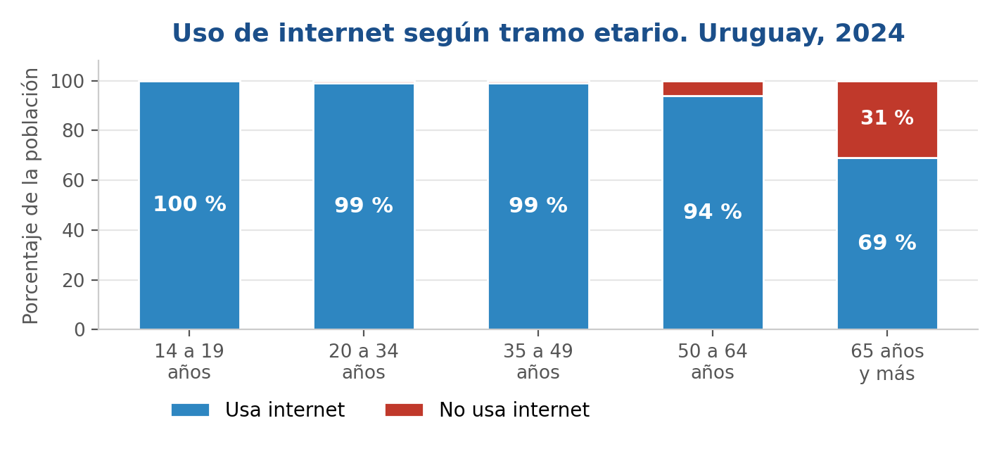
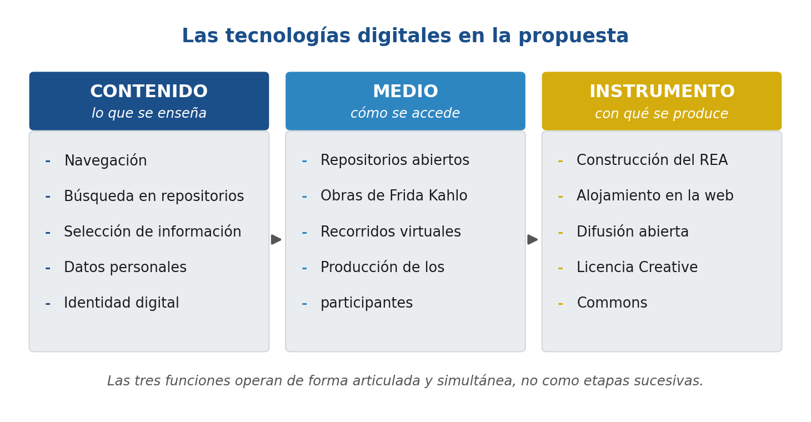
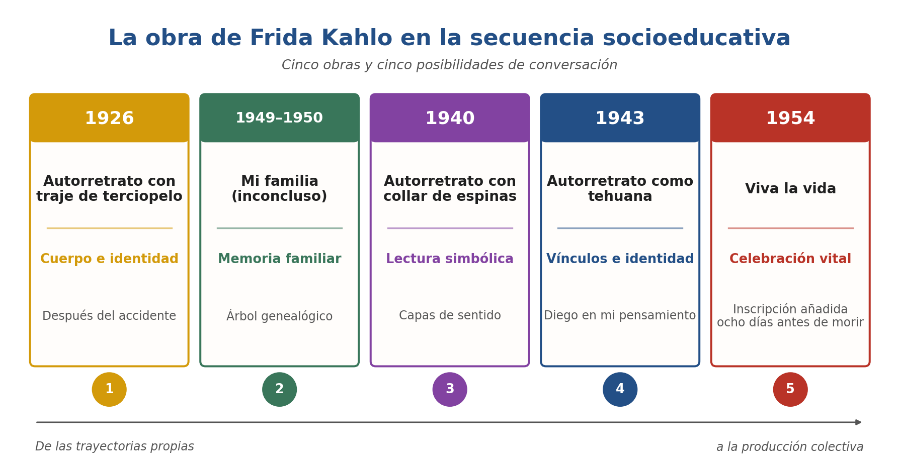

Recurso Educativo Abierto · Versión 2.0 · CC BY-NC-SA 4.0
Tejer la red
Guía para la inclusión digital de personas mayores institucionalizadas a través de la obra de Frida Kahlo
Favio Velázquez · América Palafox · ANEP-IFES · Educación Social y Tecnología · 2026
Ajustes de lecturaTamaño original y contraste normal.
Usá este recurso sin conexión. Podés instalarlo en el teléfono o la computadora: queda disponible aunque el hogar no tenga wifi. No ocupa casi espacio y se actualiza al abrirlo con conexión.
Buscar dentro del recurso
La búsqueda funciona dentro de esta página y no envía nada a ningún servidor.
Sobre este recurso
Esta guía está dirigida a educadoras y educadores sociales de establecimientos de larga estadía. Ofrece cinco encuentros en los que las personas mayores pueden buscar, elegir, interpretar y comentar obras de Frida Kahlo en fuentes digitales, además de producir un registro propio si así lo desean.
Fue elaborada por Favio Velázquez y América Palafox para el primer parcial de Educación Social y Tecnología, ANEP-IFES: el proyecto se presentó en la primera entrega y este recurso publicado es el producto final de la segunda entrega (22 de octubre de 2026). El texto, las fichas y los esquemas de elaboración propia se ofrecen bajo licencia abierta CC BY-NC-SA 4.0. Las obras enlazadas conservan los derechos indicados por cada institución.
América Palafox, mexicana y estudiante de Educación Social, seleccionó a Frida Kahlo y las cinco obras para proponer un acercamiento educativo a la riqueza cultural de México. Las fichas y actividades del recurso concretan esa intención mediante apoyos para buscar, observar, interpretar y comentar las obras.
Alcance del proyecto. Es un diseño socioeducativo para profesionales, no un informe de una intervención realizada. Sus autores no implementaron la secuencia con residentes en esta Unidad Curricular. Antes de usarla, cada profesional deberá adaptarla al grupo, acordarla con su institución y supervisar la experiencia.
Cómo comenzar: consulte el perfil de referencia, revise las fichas de las obras, complete la ficha de relevamiento de su dispositivo y adapte los encuentros a los recursos y decisiones de quienes participan.
Preparación de quien facilita
Esta lista sirve para organizar un uso futuro del recurso. Marcarla no significa que los encuentros se hayan realizado; no guarda información del grupo.
La lista se reinicia al volver a abrir la página.
El problema
Qué problema aborda
Muchas personas mayores no pueden entrar a los museos y archivos que hoy están en internet. Además, en los hogares de larga estadía se conversa poco entre residentes. Las dos cosas se trabajan juntas.
El acceso en línea a colecciones culturales no equivale a poder explorarlas. En Uruguay persisten diferencias por edad y trayectoria educativa en dispositivos, habilidades y formas de participación digital. La EUTIC 2024 informa que el 69 % de las personas de 65 años y más usa internet, frente a niveles cercanos al 99 % en edades menores.
31 %
de las personas de 65 años y más no usa internet
99 %
de uso entre personas de 14 a 49 años
3
planos: acceso, habilidades y apropiación

Uso de internet según edad. Elaboración propia con datos de INE y Agesic (2025, pp. 18-19), EUTIC 2024.
Estos porcentajes proceden de una encuesta a personas residentes en hogares particulares; no describen directamente a personas que viven en hogares de larga estadía. Antes de adaptar el recurso a cualquier institución se deben relevar allí los dispositivos, las conexiones y los apoyos disponibles.
En el dispositivo, la propuesta atiende conjuntamente la posibilidad material de usar un teléfono compartido, las habilidades de navegación y la oportunidad de elegir qué obra mirar y qué conversación abrir. Esta distinción sigue el enfoque de Helsper (2021) sobre desigualdades digitales.
El diseño también responde a la escasez de espacios de conversación entre residentes: trabajar con una obra compartida puede crear ocasiones para escuchar, elegir e interpretar con otras personas. Se trata de una posibilidad pedagógica; todavía no existen resultados de una implementación que permitan afirmar cambios en los vínculos.
Destinatarios y condiciones de uso
Para quiénes es
El recurso es para educadoras y educadores sociales. Las actividades que contiene son para las personas mayores que viven en un hogar.
Destinatarios del REA
Educadoras y educadores sociales de establecimientos de larga estadía: adaptan, coordinan y supervisan la secuencia.
Destinatarios de la secuencia
Personas mayores residentes que deseen participar, con distintos conocimientos y apoyos. Se pregunta por sus intereses sin presuponer intereses homogéneos.
Relevamiento previo
Antes de llevar el recurso a una institución, complete la ficha de relevamiento: dispositivos y datos disponibles, apoyos visuales, auditivos o de motricidad, turnos, consentimiento y acuerdos institucionales. Las condiciones de un establecimiento no se extrapolan a los demás.
La tecnología en la propuesta
Cómo entra la tecnología
La tecnología aparece de tres maneras: se enseña a usarla, sirve para ver las obras y sirve para crear y publicar este recurso.

Articulación de las tres funciones de las tecnologías digitales. Elaboración propia.
CONTENIDO
Navegación, búsqueda en repositorios, selección de información, producción y publicación de contenido propio, nociones sobre datos personales e identidad digital.
MEDIO
El acceso a las obras se produce a través de repositorios digitales de consulta gratuita, y la producción de los participantes se elabora con herramientas digitales.
INSTRUMENTO
El recurso se construye, se aloja y se difunde íntegramente mediante tecnologías digitales, bajo licencia abierta que habilita su reutilización.
Las tres funciones operan de forma articulada y simultánea, no como etapas sucesivas. Esto distingue la propuesta de un taller instrumental de alfabetización digital: la tecnología no se enseña en abstracto sino en el acto de acceder a un bien cultural determinado.
Frida Kahlo y las obras seleccionadas
Por qué Frida Kahlo
América Palafox, mexicana y estudiante de Educación Social, eligió a Frida Kahlo y las cinco obras para acercar a las personas mayores un repertorio que considera parte esencial de la riqueza cultural de México. Su intención es acompañar el acceso, el conocimiento y la interpretación de ese repertorio. La relación entre autorretrato e identidad digital es una posibilidad de trabajo dentro de la propuesta, especialmente en el cuarto encuentro.
La propuesta toma el arte como bien cultural al que se accede mientras se aprenden formas de búsqueda, selección e interpretación. La vida y la obra de Kahlo pueden abrir conversaciones sobre cuerpo, familia, símbolos, vínculos e identidad sin exigir que las experiencias de las personas participantes se equiparen a las de la artista.

Progresión temática posible de los cinco encuentros. Elaboración propia.
Derechos de imagen. Este sitio no copia las pinturas. Cada enlace lleva a una fuente institucional que mantiene su propia información de autoría y derechos. Para los encuentros primero y cuarto se indica expresamente que el registro accesible es una fotografía relacionada con la pintura, no una reproducción directa del óleo. El Museo Frida Kahlo (abre otra pestaña) informa el procedimiento para solicitar reproducciones.
1926
Autorretrato con traje de terciopelo
Cuerpo e identidad. La ficha enlazada documenta fotográficamente la obra; indica que el soporte catalogado es fotografía intervenida y no el óleo completo.
Descripción para quien no puede ver la imagen
Kahlo se retrata de medio cuerpo, en tres cuartos, con un vestido de terciopelo rojo oscuro de escote amplio. El cuello es largo y la cabeza queda ligeramente girada. El fondo es un mar estilizado con ondas oscuras y un cielo cargado. La pintó a los diecinueve años, después del accidente de tranvía.
Árbol genealógico, orígenes familiares y memoria. La ficha de la obra pertenece al Museo Frida Kahlo.
Descripción para quien no puede ver la imagen
Un árbol genealógico pintado: la artista aparece rodeada por retratos de padres, abuelos y familiares unidos por cintas. Varias figuras quedaron sin terminar, apenas dibujadas o en blanco, porque la obra quedó inconclusa. Esa incompletud permite conversar sobre lo que se sabe y lo que falta en cada historia familiar.
Colibrí, espinas, gato y mono permiten distinguir lo que se ve de las interpretaciones posibles.
Descripción para quien no puede ver la imagen
Retrato frontal sobre un fondo de hojas grandes. Del cuello cuelga un collar de espinas que le hiere la piel; del collar pende un colibrí negro con las alas abiertas. Sobre el hombro izquierdo hay un mono y sobre el derecho un gato negro. En el cabello se posan mariposas y libélulas. La mirada es directa y el gesto, sereno.
Autorretrato como tehuana (Diego en mi pensamiento)
La fuente enlazada es una fotografía conservada por el Smithsonian en la que se ve a Kahlo con la pintura; permite discutir la diferencia entre obra, documento y reproducción.
Descripción para quien no puede ver la imagen
La fuente enlazada es una fotografía de archivo en la que se ve a Kahlo junto a la pintura. En el cuadro, la artista lleva el tocado blanco de encaje de las mujeres tehuanas, que se abre en abanico alrededor del rostro. Sobre la frente aparece pintado un retrato pequeño de Diego Rivera, y del tocado salen líneas como raíces.
Obra de 1954. Según el Museo Frida Kahlo, la inscripción de las sandías fue añadida ocho días antes de la muerte de la artista.
Descripción para quien no puede ver la imagen
Sandías enteras, partidas y en rodajas ocupan el primer plano: pulpa roja, semillas negras y cáscara verde, bajo un cielo azul con nubes. En la pulpa de una de ellas está tallada la frase VIVA LA VIDA. Es una naturaleza muerta que funciona como declaración.
Antes de cada uso, compruebe que el enlace abre en el teléfono disponible y lea la ficha institucional para evitar tratar una fotografía de la obra como si fuera la obra misma. Las imágenes externas pueden requerir datos móviles; anticipe la carga en un dispositivo del equipo cuando sea posible.
Recorrido por la Casa Azul
Qué es esto
Un paseo por la casa donde Frida Kahlo nació y murió, hoy convertida en museo. Sirve para ubicar las obras en el lugar donde vivió.
El recorrido complementa las cinco fichas de obras: permite situar la producción de Kahlo en su casa y su jardín antes o después de trabajar cada pintura. El museo ofrece además un recorrido propio de 360 grados, que es la fuente institucional de referencia.
Para trabajar sin datos: el video consume varios megabytes. Con conectividad limitada conviene verlo antes del encuentro o describirlo en voz alta a partir de las fichas impresas.
Baja audición: activar los subtítulos del reproductor y acompañar con la consigna escrita de la ficha correspondiente.
Vida y obra: fuentes para preparar el encuentro
Para situar la biografía de la artista antes de trabajar las obras conviene partir de fuentes institucionales, que indican autoría, fecha y condiciones de uso. No se incorpora aquí un video biográfico de terceros porque su procedencia y permanencia no pueden garantizarse en el tiempo.
El video está alojado en YouTube. No se carga solo: al pulsar el botón, YouTube recibirá tu dirección IP y los datos propios de su servicio.
Recorrido virtual por el Museo Frida Kahlo, La Casa Azul, Ciudad de México. Video de terceros enlazado con fines educativos; sus derechos pertenecen a quien lo publicó.
Secuencia socioeducativa
Qué son los cinco encuentros
Cada encuentro junta una obra, un aprendizaje digital y una pregunta para conversar. Son propuestas para adaptar, no un taller ya realizado.
Estos cinco encuentros son orientaciones para futuras implementaciones: los tiempos y las preguntas deben ajustarse a las decisiones, capacidades y condiciones de cada grupo. Se parte de trayectorias propias, se exploran fuentes culturales y se llega a una producción cuya circulación deciden las personas participantes.
Con conectividad limitada conviene alternar duplas y tríadas y repartir turnos de manejo. El cuadernillo reúne las fichas de los encuentros, las láminas, las tarjetas de pasos, el repertorio con códigos QR y los instrumentos, para descarga anticipada; sostiene consignas y conversación sin conexión, pero no incorpora imágenes de pinturas ajenas. La persona educadora comprueba antes los enlaces culturales. Si no hay datos suficientes, reprograma la observación visual de las obras y la práctica de búsqueda digital: una ficha impresa no demuestra esa habilidad.
Qué se observaría si se implementa: en el plano digital y cultural, elecciones sobre la fuente, pasos de navegación y distinción entre datos e interpretaciones; en el plano del encuentro, turnos de manejo o dirección del dispositivo, preguntas dirigidas a otras personas y decisiones compartidas. Son señales de observación orientativas, no resultados obtenidos por los autores.
Elegí un encuentro
Podés recorrerlos en orden o abrir uno directamente. El número señalado indica la parte de la página que estás leyendo, no un taller realizado.
Marcá los encuentros que ya revisaste y adaptaste a tu dispositivo. La marca se guarda solo en este navegador, nadie más la ve y podés borrarla con el botón «Borrar mis ajustes».
0 de 5 encuentros preparados.
Lectura en voz alta opcional
Podés escuchar los resúmenes de los encuentros con el botón que aparece al abrir cada explicación breve. El texto siempre queda visible; el audio no comienza solo.
La voz depende de las opciones disponibles en tu navegador. Se puede detener en cualquier momento.
Esta lectura es un apoyo. Puede pronunciar nombres de modo imperfecto y no sustituye un lector de pantalla ni los apoyos humanos de la actividad.
Encuentro 1: Las tecnologías de mi vida y primera obra
En pocas palabras · abrir explicación breve
Cada persona cuenta qué aparatos marcaron su vida. Armamos juntos una línea de tiempo y conocemos la primera obra de Kahlo. Nadie tiene que contar experiencias íntimas.
Objetivo: Recuperar las trayectorias tecnológicas de las personas participantes como punto de partida de la secuencia y presentar la primera obra del recorrido.
Contenido del programa: Perspectiva histórica de las principales transformaciones tecnológicas.
Tiempo y materiales: Hasta 60 minutos, con pausas. Láminas impresas de una radio, un teléfono fijo, un televisor y un celular; papel afiche, marcadores y guía de relevamiento.
Inicio (10 minutos): Presentación de la propuesta, del recorrido de los cinco encuentros y de su carácter voluntario: cada persona puede observar, intervenir, pedir apoyo o retirarse.
Desarrollo (35 minutos): Ronda de relatos con las láminas: cuál fue el primer aparato que llegó a su casa, quién lo usaba, cómo aprendió a usarlo. Quien coordina toma nota con la guía de relevamiento.
Cierre (15 minutos): Línea de tiempo colectiva en papel afiche, en letra grande, que queda expuesta en el espacio común. Para terminar, se muestra en pantalla ampliada la ficha del Autorretrato con traje de terciopelo (1926) y el grupo ubica autora, título, año e institución.
Consigna: «¿Cuál fue el primer aparato que cambió la vida en su casa? ¿Cómo aprendió a usarlo?»
Para observar, si se implementa: relatos de trayectorias tecnológicas, sin exigir respuesta oral o escrita a quien prefiera escuchar. Se evalúa la propuesta, no a las personas.
Practicamos en duplas cómo usar el teléfono: agrandar la letra, abrir el navegador, buscar y volver atrás. Después miramos juntos la obra Mi familia.
Objetivo: Familiarizarse con el dispositivo y con la navegación básica a partir del trabajo en duplas.
Contenido del programa: Alfabetización digital básica.
Tiempo y materiales: Hasta 60 minutos, con pausas. Dispositivos, tarjetas de pasos en letra grande y tarjeta del repertorio con códigos QR.
Inicio (10 minutos): Se retoma la línea de tiempo. Las duplas se acuerdan con lo relevado y las preferencias de cada persona, combinando a quien usa el celular a diario con quien no lo usa, sin asignar a nadie la tarea de enseñar.
Desarrollo (40 minutos): Con pantalla compartida, una persona maneja y la otra orienta: desbloquear sin mostrar la clave al grupo, ajustar letra y brillo, abrir el navegador, escribir o dictar una búsqueda simple y volver atrás. A mitad del tiempo se intercambian los roles. Al final, cada dupla abre la ficha de Mi familia (inconcluso) y observa la obra; nadie está obligado a hablar de su propia familia.
Cierre (10 minutos): Cada dupla cuenta qué le resultó más fácil y qué más difícil; quien coordina registra los ajustes para el encuentro siguiente.
Consigna: «Entre los dos, busquen en internet algo del lugar donde pasaron su infancia.»
Para observar, si se implementa: turnos de manejo y de orientación del dispositivo dentro de cada dupla. Se evalúa la propuesta, no a las personas.
Buscamos obras de Kahlo en las páginas de los museos. Cada persona elige una y cuenta por qué. Mirar una obra en internet no significa poder copiarla.
Objetivo: Buscar de forma autónoma obras de Frida Kahlo en las fichas oficiales de las instituciones, distinguir los datos de la ficha de las interpretaciones propias, seleccionar una obra y fundamentar la elección ante el grupo.
Contenido del programa: Alfabetización en información.
Tiempo y materiales: Hasta 60 minutos, con pausas. Dispositivos y tarjeta del repertorio con los pasos de búsqueda.
Inicio (10 minutos): Presentación breve de Kahlo y de qué es un repositorio digital: un museo que se recorre desde la pantalla. Mirar una obra sin costo no equivale a poder copiarla y publicarla. Con el Autorretrato con collar de espinas y colibrí (1940), el grupo separa lo que informa la ficha de lo que cada persona interpreta.
Desarrollo (35 minutos): En duplas, búsqueda en las fichas del repertorio. Cada persona elige una obra y guarda el enlace, sin descargar la imagen.
Cierre (15 minutos): Puesta en común: cada persona muestra la obra elegida y explica por qué; el grupo comenta las elecciones de las demás.
Consigna: «Busque una obra que le llame la atención y cuéntenos qué ve en ella y por qué la eligió.»
Para observar, si se implementa: búsqueda autónoma o con apoyo de la dupla, elección fundamentada y comentarios dirigidos a otras personas, no solo a quien coordina. Se evalúa la propuesta, no a las personas.
Miramos cómo Kahlo eligió mostrarse en sus autorretratos y conversamos sobre nuestras fotos en WhatsApp. Nada se publica sin el permiso de cada persona.
Objetivo: Relacionar el autorretrato en la obra de Kahlo con las decisiones sobre la propia imagen en entornos digitales.
Contenido del programa: Producción de identidad en contexto digital y datos personales.
Tiempo y materiales: Hasta 60 minutos, con pausas. Dispositivos, enlaces del repertorio y modelo de autorización impreso en letra grande.
Inicio (15 minutos): Observación en pantalla ampliada de los autorretratos del repertorio y de la fotografía de Kahlo junto a Autorretrato como tehuana (ca. 1943): qué muestra de sí misma, qué deja afuera y en qué se diferencia una obra de una fotografía de esa obra.
Desarrollo (30 minutos): Conversación sobre las fotos que reciben y envían por WhatsApp y la imagen de perfil. Quien tiene celular propio revisa quién puede ver su foto de perfil. No se proyectan perfiles, mensajes ni contactos reales.
Cierre (15 minutos): Se presentan las opciones de dejar el comentario en el grupo o publicarlo en una sección separada del sitio. Se lee en voz alta el modelo de autorización y se comprueba su comprensión: el acuerdo colectivo no reemplaza la autorización individual.
Consigna: «Si tuviera que elegir una imagen suya para mostrar a otras personas, ¿qué mostraría y qué guardaría para usted?»
Para observar, si se implementa: comprensión de las opciones de circulación y decisiones expresadas sin pedir datos personales ni fotografías. Se evalúa la propuesta, no a las personas.
Cada persona escribe o dicta un comentario sobre la obra que eligió. Publicarlo es una decisión individual: se puede participar y decir que no.
Objetivo: Producir de forma colectiva comentarios sobre las obras elegidas, con la publicación como decisión individual e independiente.
Contenido del programa: Creación y publicación de contenido digital.
Tiempo y materiales: Hasta 60 minutos, con pausas. Dispositivos con dictado por voz, modelo de autorización y registro del encuentro.
Inicio (10 minutos): Observación de Viva la vida (1954), la última obra de Kahlo, y repaso de las obras elegidas y de las opciones de circulación. Decidir no publicar no impide escribir, dictar ni participar.
Desarrollo (40 minutos): Cada persona escribe o dicta un comentario breve sobre la obra que eligió; si prefiere no usar el dictado, la dupla transcribe y lee en voz alta para confirmar el sentido. El grupo elige un título para la colección.
Cierre (10 minutos): Lectura de los comentarios y revisión de cómo aparecerían: sin identificación o con un seudónimo elegido. Solo después se solicita la autorización individual a quienes deseen publicar.
Consigna: «Escriba, dicte o cuéntenos lo que quiere decir de la obra que eligió. Después decide si ese comentario queda en el grupo o se publica.»
Para observar, si se implementa: un comentario elaborado y revisado por cada persona, aunque decida no publicarlo. Se evalúa la propuesta, no a las personas.
Este asistente funciona con respuestas preparadas a partir del recurso. No es una IA generativa: no inventa información, no se conecta a un servicio externo y no registra preguntas. Para una respuesta completa, seguí el enlace a la sección indicada.
Preguntas habituales
Hola. Elegí una pregunta o escribí una consulta breve sobre este recurso. Si no encuentro una respuesta segura, te indicaré dónde buscarla.
No escribas nombres, datos de salud ni información de residentes. Las preguntas quedan solo en esta página mientras está abierta.
El cuadernillo reúne el repertorio de obras con códigos QR y descripciones accesibles, las fichas de los cinco encuentros, las láminas del encuentro 1, las tarjetas de pasos del encuentro 2, la tarjeta del repertorio, la guía de relevamiento, el registro de cada encuentro, los criterios de evaluación, la ficha de revisión del recurso y el modelo de autorización en letra grande. Contiene solo textos y esquemas propios: no incluye reproducciones de las pinturas ni de las fotografías enlazadas. Descargalo antes del encuentro; si falta conexión, usalo para conversar y decidir, y retomá la observación de las obras y la navegación cuando sea posible abrir las fuentes culturales.
Complete el relevamiento antes de adaptar la secuencia: dispositivos disponibles, conectividad, turnos, accesibilidad, intereses del grupo y autorizaciones institucionales. El registro es un documento de trabajo de acceso restringido; la ficha de devolución permite compartir una implementación futura sin exponer datos personales.
Accesibilidad aplicada
Para qué sirve esta sección
Aquí están las decisiones para que puedan participar personas que ven poco, oyen poco, se mueven con dificultad o no tienen celular propio.
Baja visión: ampliar texto y usar el zoom del navegador antes de empezar; describir en voz alta la imagen y el texto alternativo de los esquemas; ofrecer ficha impresa de mayor tamaño.
Baja audición: mirar de frente al grupo, reducir ruido de fondo, entregar consignas por escrito y activar subtítulos si se emplea un video.
Motricidad reducida: usar el dictado por voz en lugar del teclado, apoyar el teléfono en un soporte y respetar que una persona dirija la búsqueda mientras otra opera la pantalla, sin decidir por ella.
Participación desde la habitación: acordar con la persona y con el personal un momento y los apoyos; trabajar con la tableta o con las fichas impresas. Su obra y su comentario se suman a la puesta en común solo si la persona lo autoriza.
Sin teléfono propio: rotar el dispositivo entre duplas o tríadas; registrar quién pudo decidir el paso, quién necesitó ayuda y cómo se ofreció esa ayuda.
Conexión limitada: probar enlaces, estimar consumo y cargar las fuentes antes del encuentro cuando sea posible; las fichas pueden imprimirse, pero la práctica de navegación debe retomarse cuando haya conexión.
Colores y contraste: la paleta sigue el criterio de diseño universal de color de Okabe e Ito, que distingue los acentos sin depender de la oposición rojo–verde, sobre fondo hueso para reducir el deslumbramiento. Ningún dato se transmite solo por color.
Atajos de teclado:Alt+B lleva al buscador, Alt+A al asistente y Alt+C al comienzo del contenido.
Diversidad lingüística: comenzar por observación y conversación; preguntar qué lengua prefieren para el apoyo escrito y no suponer que una imagen elimina las barreras de comprensión.
Privacidad y decisión de compartir
Regla básica
Participar no significa dar permiso para publicar. Cada persona decide qué se comparte, y nada sale del grupo sin su consentimiento.
La participación en la actividad no implica autorizar publicación. Antes de documentar o compartir una producción, la persona educadora debe explicar qué se guardará, dónde, quién podrá verlo y cómo se podrá retirar. Obtendrá consentimiento específico de cada participante y, cuando corresponda, cumplirá los requisitos institucionales y de representación legal sin sustituir la voluntad de la persona.
La Ley N.º 18.331 exige que el tratamiento de datos personales cuente con consentimiento libre, previo, expreso e informado, y que ese consentimiento se documente (art. 9). Por eso participar, quedar registrado y publicar son tres decisiones distintas.
No publicar fotografías ni nombres identificables de residentes; preferir registros anonimizados de decisiones y aprendizajes.
Si una persona quiere publicar su comentario, se usa el modelo de autorización individual: se completa después de revisar el texto, admite publicar sin identificación o con un seudónimo y se puede retirar en cualquier momento. El acuerdo del grupo no la reemplaza. El nombre de pila o las iniciales no garantizan el anonimato.
Los comentarios autorizados se publican en una sección separada, fuera de la licencia CC BY-NC-SA 4.0, porque esa licencia no puede revocarse y cada persona conserva el derecho a retirar lo suyo.
Una obra escrita o un audio puede quedarse en el grupo. Si se decide difundir, revisar que no revele datos de salud, domicilio o terceras personas.
No enviar producciones de residentes por un canal de comentarios público del repositorio; primero revisar consentimiento, anonimización y autorización institucional.
Esta página guarda en tu propio navegador los ajustes de lectura y las marcas de preparación de los encuentros. No viajan a ningún servidor, no identifican a nadie y se borran con el botón «Borrar mis ajustes».
El video del recorrido no se carga solo. Al pulsar el botón, YouTube recibe tu dirección IP y aplica sus propias condiciones; el enlace usa el dominio sin cookies de seguimiento previo.
Las notas de adaptación que escribas quedan en tu navegador hasta que uses el botón de borrado; por eso no deben contener nombres ni datos de personas residentes.
Si instalás el recurso, se guarda una copia de las páginas y del cuadernillo en tu dispositivo para poder abrirlo sin conexión. Esa copia no contiene datos de personas y se elimina al desinstalarlo.
El conteo de visitas no está activo. Si se activara, la integración opcional con GoatCounter requeriría tu permiso, mostraría su estado al pie y distinguiría visitas por IP y navegador durante hasta ocho horas, sin conservar IP en su base de datos. No equivaldría a contar personas distintas. Los canales externos de chat y correo tienen un aviso propio de privacidad.
Autoevaluación antes de implementar
Para qué sirve
Cinco preguntas para revisar si la propuesta está lista para tu grupo. Las respuestas no se guardan ni se envían.
Esta revisión está dirigida a la persona educadora que vaya a adaptar la secuencia. No evalúa a las personas participantes ni registra ningún dato.
Cómo contribuir al recurso
Una persona educadora que adapte la propuesta puede dejar constancia de la situación inicial, los cambios que hizo, las barreras encontradas y los aprendizajes observados. La ficha de devolución permite registrar esos aportes sin identificar residentes. Las propuestas que se incorporen a versiones nuevas deben citar la contribución de quien las formuló.
Canal de aportes:proponer una mejora en GitHub Issues. Para comentar se requiere una cuenta GitHub; la lectura del REA no exige registro. No se suben datos ni producciones identificables de residentes a un canal público.
Compartir o proponer una mejora
Podés compartir el enlace del REA usando las opciones de tu teléfono o copiarlo. Para consultas sobre el contenido y propuestas profesionales, podés dialogar en la sala pública o escribir a Favio, además de usar GitHub Issues. No compartas datos de residentes en estos canales.
Mis notas de adaptación
Espacio para anotar cómo adaptarías la secuencia a tu dispositivo. Se guarda solo en este navegador y podés descargarlo como archivo de texto. No escribas nombres ni datos de residentes.
Las notas no se envían a ningún servidor.
Historial de versiones
Versión 1.0 — publicada el 17 de setiembre de 2026. Diseño de Favio Velázquez y América Palafox para Educación Social y Tecnología, ANEP-IFES.
Versión 1.1 — revisada el 18 de setiembre de 2026. Se incorporó la descarga directa del cuadernillo y se explicitaron las señales de aprendizaje digital y encuentro social.
Versión 1.2 — revisada el 18 de setiembre de 2026. Se añadieron herramientas de lectura, navegación móvil, acceso rápido a los encuentros, una lista local de preparación y orientaciones según la conectividad.
Versión 1.3 — revisada el 18 de setiembre de 2026. Se añadieron explicaciones breves, un asistente de respuestas preparadas, lectura opcional en voz alta y una opción para compartir el enlace. No hay música automática ni envío de preguntas o datos personales. Segunda entrega y presentación previstas para el 22 de octubre; los encuentros todavía no se implementaron.
Versión 1.4 — revisada el 19 de setiembre de 2026. Se corrigió el contraste de los subtítulos, se agregó un modo de lectura cómoda con espaciado ampliado, se conservan los ajustes de lectura en el navegador de cada persona, se incorporaron resúmenes en palabras claras en cada sección, un buscador interno, el seguimiento de preparación de los cinco encuentros, una autoevaluación para quien implemente, el recorrido por la Casa Azul con carga diferida y la preparación de una integración opcional para el conteo de visitas, pendiente de activar.
Versión 1.5 — revisada el 19 de setiembre de 2026. Se adoptó una paleta de diseño universal de color sobre fondo hueso, con contraste AAA en el cuerpo del texto y cuerpo base de 18 píxeles; se agregaron descripciones verbales de las cinco obras para quienes no pueden verlas, fuentes institucionales sobre la vida de la artista, notas de adaptación descargables, atajos de teclado, enlaces copiables por sección y la opción de retomar la lectura donde quedó. El asistente pasó a reconocer las consultas por palabras clave y a ofrecer alternativas cuando no encuentra una respuesta segura.
Versión 1.6 — revisada el 19 de setiembre de 2026. El buscador pasó a reconocer cada palabra por separado y por su raíz, de modo que «educador social» encuentra también «educadoras y educadores sociales». El recurso se integró como sección de un sitio mayor y se publicó como aplicación instalable, utilizable sin conexión.
Versión 2.0 — revisada el 4 de octubre de 2026. Alineación con la versión final del primer parcial: cada encuentro sigue una ficha común con objetivo, contenido, momentos y consigna; se incorporaron la guía de relevamiento de trayectorias, el registro de cada encuentro, la ficha de revisión del recurso y el modelo de autorización individual de publicación; el cuadernillo pasó a incluir el repertorio con códigos QR, láminas y tarjetas de pasos. Se explicitó, además, que la elección de Frida Kahlo y de las cinco obras es una decisión curatorial de América Palafox, y se actualizaron las respuestas del asistente sobre la duración y los objetivos. Los encuentros todavía no se implementaron con residentes.
Ajustes finales de la versión 2.0 — 5 de octubre de 2026. Se corrigieron la respuesta sobre el objetivo del proyecto y el historial de preguntas del asistente. Se añadió un espacio opcional de comunicación con chat público y formulario dirigido a Favio, cuyo correo destinatario requiere verificación. El conteo de visitas queda preparado y se indica su estado real; necesita una cuenta propia para activarse. Los nuevos canales no reciben producciones de residentes ni forman parte de una implementación ya realizada.
Publicación de la versión 2.0 como producto final — 22 y 23 de octubre de 2026. Segunda entrega del primer parcial. El sitio quedó dedicado exclusivamente a la entrega: portada con código QR para compartirlo, retiro de las secciones ajenas a la unidad curricular y consentimiento previo para abrir la sala de chat. Se corrigió el subtítulo en pantallas pequeñas, los gráficos pasaron a archivos livianos y la página carga sin saltos en conexiones móviles lentas. El formulario figura como activo tras la prueba de recepción del 5 de octubre; el conteo de visitas permanece inactivo y no se muestra. Los encuentros todavía no se implementaron con residentes.
Licencia y atribución
CC BY-NC-SA 4.0, Atribución-NoComercial-CompartirIgual. Se permite copiar y adaptar los textos, fichas y esquemas originales de este REA con atribución, sin uso comercial y con la misma licencia para las adaptaciones.
Esta licencia no se extiende a las pinturas, fotografías de archivo ni a los contenidos de los museos enlazados. Consulte sus condiciones antes de reutilizarlos.
Velázquez, F. y Palafox, A. (2026). Tejer la red: recurso educativo abierto para la inclusión digital de personas mayores institucionalizadas. ANEP-IFES. CC BY-NC-SA 4.0.
Archives of American Art, Smithsonian Institution. (s. f.). Fotografía de Frida Kahlo con su pintura Autorretrato como tehuana [Fotografía]. Google Arts & Culture (abre otra pestaña).
Consejo de Formación en Educación. (2023). Educación Social y Tecnología. Trayecto de Lenguajes Diversos. Plan de estudios Educador Social. ANEP.
Fernández Cladera, B. (2007). El papel del profesional de la educación social en la e-inclusión. EDUTEC 2007.
Ley N.º 18.331 de Protección de Datos Personales y Acción de Habeas Data. (2008, 11 de agosto). Registro Nacional de Leyes y Decretos.IMPO (abre otra pestaña).
Sibilia, P. (2012). La escuela en un mundo hiperconectado: ¿redes en vez de muros? Revista Educación y Pedagogía, 24(62), 135–144.
Tejer la red · Ficha del encuentro 1
Material para adaptar en una implementación futura. No registrar datos personales.
Las tecnologías de mi vida y primera obra
Objetivo: Recuperar las trayectorias tecnológicas de las personas participantes como punto de partida de la secuencia y presentar la primera obra del recorrido.
Consigna: «Entre los dos, busquen en internet algo del lugar donde pasaron su infancia.»
Lo que el grupo eligió mirar, preguntar o conservar en privado:
Apoyos ofrecidos y quién decidió cada paso:
Ajustes para el encuentro siguiente:
Velázquez y Palafox · ANEP-IFES · CC BY-NC-SA 4.0 · 2026 · versión 2.0
Tejer la red · Ficha del encuentro 3
Material para adaptar en una implementación futura. No registrar datos personales.
Buscar y elegir obras
Objetivo: Buscar de forma autónoma obras de Frida Kahlo en las fichas oficiales de las instituciones, distinguir los datos de la ficha de las interpretaciones propias, seleccionar una obra y fundamentar la elección ante el grupo.
Consigna: «Escriba, dicte o cuéntenos lo que quiere decir de la obra que eligió. Después decide si ese comentario queda en el grupo o se publica.»
Lo que el grupo eligió mirar, preguntar o conservar en privado:
Apoyos ofrecidos y quién decidió cada paso:
Ajustes para el encuentro siguiente:
Velázquez y Palafox · ANEP-IFES · CC BY-NC-SA 4.0 · 2026 · versión 2.0
Tejer la red · Ficha de relevamiento del dispositivo
Material para adaptar en una implementación futura. No registrar datos personales sensibles.
Tipo de establecimiento y fecha del relevamiento (sin nombres de residentes):
Intereses expresados por el grupo y objetivos institucionales pertinentes:
Dispositivos y conectividad disponibles; cantidad para organizar turnos:
Apoyos visuales, auditivos, de motricidad o lingüísticos que el grupo acuerde:
Horario posible, coordinación previa y referente institucional:
Adaptaciones previstas y forma de registrar decisiones sin identificar personas:
Velázquez y Palafox · ANEP-IFES · CC BY-NC-SA 4.0 · 2026
Tejer la red · Ficha de devolución de una implementación
Material para adaptar en una implementación futura. No registrar datos personales sensibles.
Institución o tipo de dispositivo (usar denominación genérica si corresponde):
Fecha de los encuentros y profesional que desea figurar como contribuyente:
Qué se adaptó y por qué:
Qué elecciones o aprendizajes se observaron; qué apoyos fueron necesarios:
Qué no funcionó y qué cambiaría:
Materiales propuestos para otra versión, sin datos identificables:
Velázquez y Palafox · ANEP-IFES · CC BY-NC-SA 4.0 · 2026
Tejer la red · Guía de relevamiento de trayectorias
Se aplica en el primer encuentro como conversación, no como cuestionario. Se registra como relato, sin calificar niveles de habilidad.
¿Qué aparatos había en su casa cuando era niño o niña? ¿Quién los usaba?
¿Cuál fue el primero que usó usted? ¿Quién le enseñó?
¿Usa hoy un celular? ¿Para qué? ¿Quién le enseñó?
¿Qué le gustaría poder hacer con el celular que hoy no hace?
Código interno de la persona (sin nombre) y fecha:
Velázquez y Palafox · ANEP-IFES · CC BY-NC-SA 4.0 · 2026 · versión 2.0
Tejer la red · Registro de cada encuentro
Documento de trabajo de acceso restringido: no se publica. Sin fotografías, apellidos, datos de salud ni contraseñas.
Fecha, número de encuentro y participantes (códigos internos):
Qué se propuso y qué ocurrió:
Producciones: obras elegidas y comentarios elaborados:
Intercambios entre participantes surgidos durante el encuentro:
Dificultades del diseño y ajustes para el encuentro siguiente:
Velázquez y Palafox · ANEP-IFES · CC BY-NC-SA 4.0 · 2026 · versión 2.0
Tejer la red · Ficha de revisión del recurso
La completan quienes elaboran o adaptan el recurso, antes de publicarlo y después. Evalúa el recurso; no mide efectos en residentes. Un registro por aspecto: coherencia pedagógica, navegación, accesibilidad, derechos y privacidad, viabilidad.
Velázquez y Palafox · ANEP-IFES · CC BY-NC-SA 4.0 · 2026 · versión 2.0
Autorización de publicación
Yo, ______________________, autorizo la publicación del comentario que elaboré sobre la obra ______________________ en la sección de comentarios del recurso «Tejer la red», ☐ sin identificación ☐ con el seudónimo ______________.
Revisé el texto y sé que cualquier persona podrá leerlo en internet. Puedo participar aunque no publique. No se publicarán fotografías mías ni otros datos personales. Puedo pedir que lo retiren en cualquier momento a ______________________ (responsable y contacto). El equipo lo retirará del sitio, pero no puede borrar copias hechas por otras personas.
Fecha: ____________ Firma o constancia de voluntad: ____________________
Velázquez y Palafox · ANEP-IFES · CC BY-NC-SA 4.0 · 2026 · versión 2.0